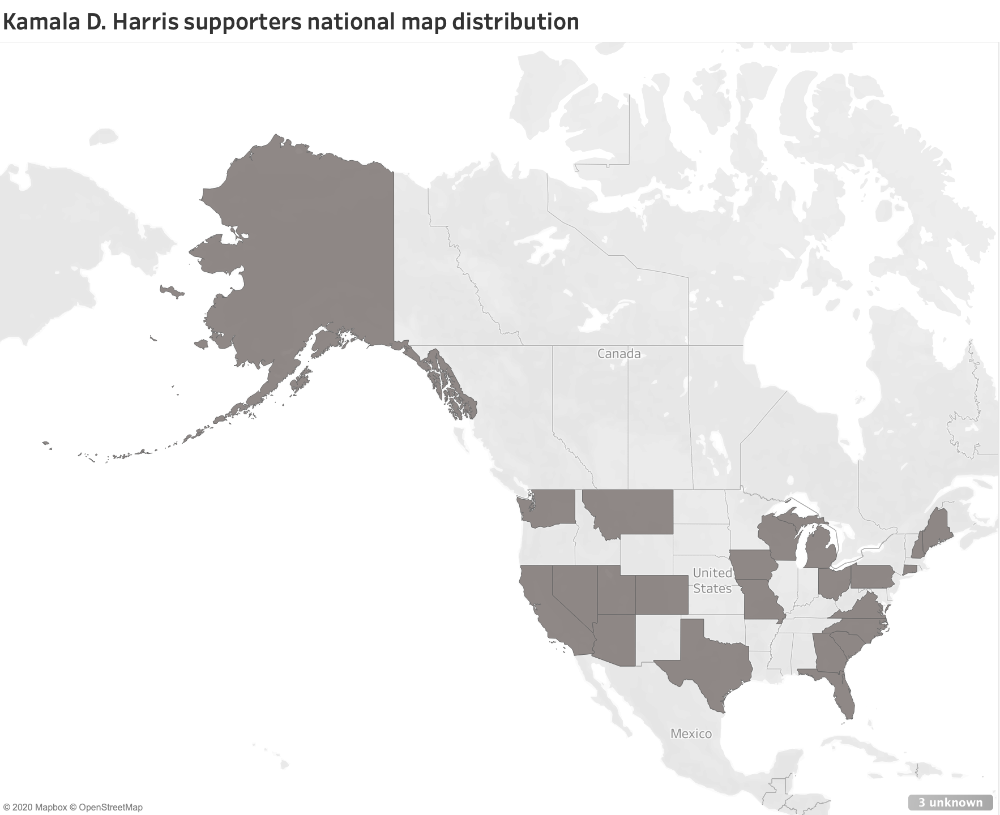
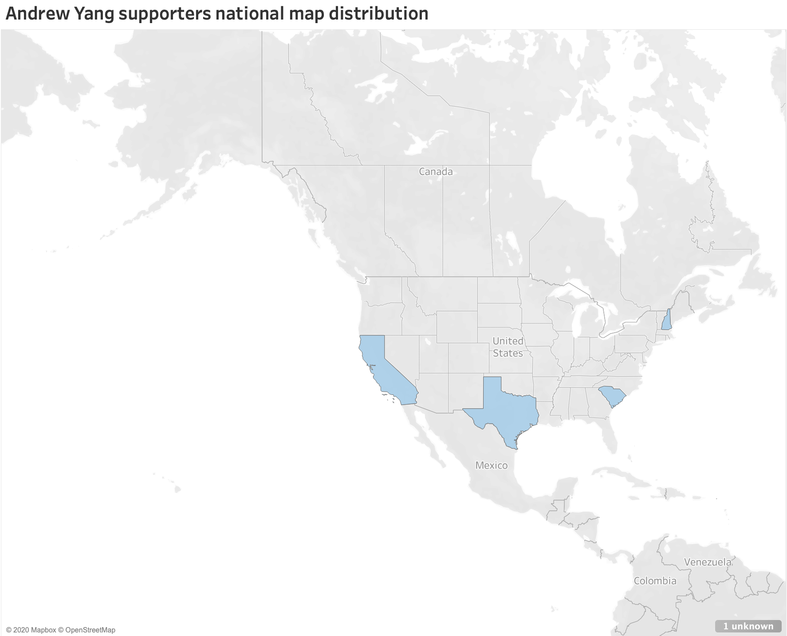

Candidate supporting by states
This is Kamala D. Harris supporters national map distribution, we can see that he got suppoters in most of the states
This is Andrew Yang supporters national map distribution, we can see that he got suppoters in most of the states. Given that he is the only Asian who join the election, he has suppoters only in 4 states
Candidate supporting states by party

This is Kamala D. Harris supporters national map distribution, we can see that he got suppoters in most of the states

This is Andrew Yang supporters national map distribution, we can see that he got suppoters in most of the states. Given that he is the only Asian who join the election, he has suppoters only in 4 states